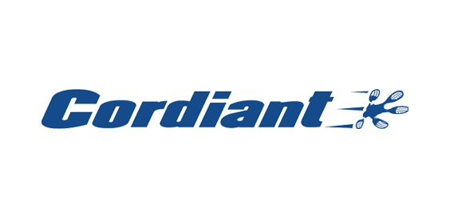

Cordiant - это бренд холдинга ООО" Сибур-русские шины". Шинный бренд Cordiant достаточно молод — он родился в 2005 году. Однако уже за этот короткий срок Cordiant удалось выйти в лидеры среди отечественных шинных производителей по узнаваемости и популярности.
Шинный Холдинг "Сибур - Русские шины" - крупнейший производитель шин на территории России. С 1 января 2006 года в рамках реструктуризации компания "Сибур - Русские шины" была реорганизована из торгово-маркетинговой компании в крупнейший в России шинный холдинг, который получил исключительные полномочия по управлению шинным бизнесом "Сибур-Холдинга".
В состав ООО"Сибур-русские шины" входят:
- ОАО "Ярославский шинный завод"
- ОАО "Омскшина"
- ОАО "Волтайр-Пром"
- ООО "Уралшина"
- СП ЗАО "Матадор-Омскшина"
Корпоративный центр ШХ "Сибур - Русские шины" расположен в Москве. Филиалы компании открыты на базе шинных заводов в Ярославле, Омске, Волжском (Волгоградская обл.), Екатеринбурге, а также в Санкт-Петербурге. По итогам 2005 года компания «Сибур - Русские шины» реализовала шин на сумму свыше 14,17 млрд. руб., что на 1,7% больше, чем годом ранее. По итогам 2005 года компания занимает 39,6% российского шинного рынка в стоимостном выражении.
Шины Cordiant:
Шины Cordiant появились в 2005 году, позиционируются в среднем ценовом сегменте (В) по международной классификации. Все шины под брендом Cordiant проектируются и изготавливаются по европейским технологиям на современном оборудовании на Ярославском шинном заводе. Компьютерное проектирование протектора и применение резиновых смесей европейской рецептуры позволяют сравнивать шины Cordiant с шинами ведущих европейских производителей. Высокий уровень потребительских качеств, хороший баланс между рабочими качествами и износостойкостью и выдающийся для отечественных комфорт, быстро позволили шинам Cordiant завоевать популярность среди российских автомобилистов. Постоянное улучшение рабочих качеств шин, разработка новых моделей и внедрение новых технологий производства позволяют уверенно держаться на уровне лидеров, что подтверждают многочисленные тесты шин.
По оценке независимых экспертов («За рулем», «Авторевю», Test World) шины Cordiant регулярно становятся лидерами тестов в своей ценовой категории, и по эксплуатационным характеристикам не уступают, а зачастую и превосходят шины «премиум-сегмента». В 2008 году была представлена зимняя шипованная модель SNO-MAX, которая заняла в сравнительных тестах «Авторевю» второе место, оказавшись в компании таких многолетних признанных лидеров данного направления как Gislaved, Nokian, Continental, потеснив модели многих премиум-брендов.
При этом шины Cordiant относятся к среднему ценовому сегменту, и адресованы владельцам наиболее распространенных в России автомобилей. К летнему сезону 2009 компания «СИБУР – Русские шины» выпустила на рынок новую линейку летних шин Cordiant Sport 2 и серьезно модернизировала прошлогоднюю новинку Cordiant Comfort. Cordiant - это широкий выбор моделей легковых и легкогрузовых шин. Длязимы: Cordiant Polar, Cordiant Polar 4*4, Cordiant Polar SL, Cordiant SNO-MAX, Cordiant Business CW. Для лета: Cordiant Comfort, Cordiant Sport, Cordiant Sport 2, Cordiant Standart, Cordiant 4*4, Cordiant 4*4 All terrain, Cordiant Off-Road, Cordiant Business CS. За три года узнаваемость бренда Cordiant среди автовладельцев достигла 77%, а по уровню знания рекламы Cordiant безоговорочный лидер на российском рынке. Cordiant не имеет в собственной программе специализированных гоночных шин, тем не менее, бренд Cordiant не чужд автомобильному спорту. Немалая часть целевой аудитории»таких покрышек — автомобилисты со средним и выше уровнем достатка, ведущие активный образ жизни, использующие автомобили как в городах, так и за их пределами, на дорогах разного качества и покрытия.